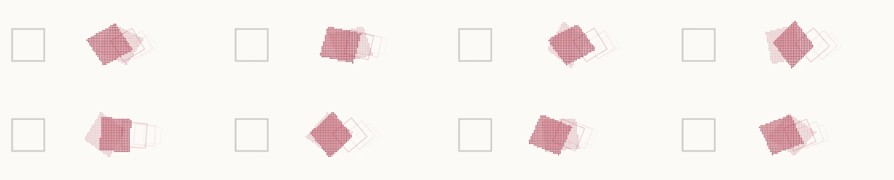
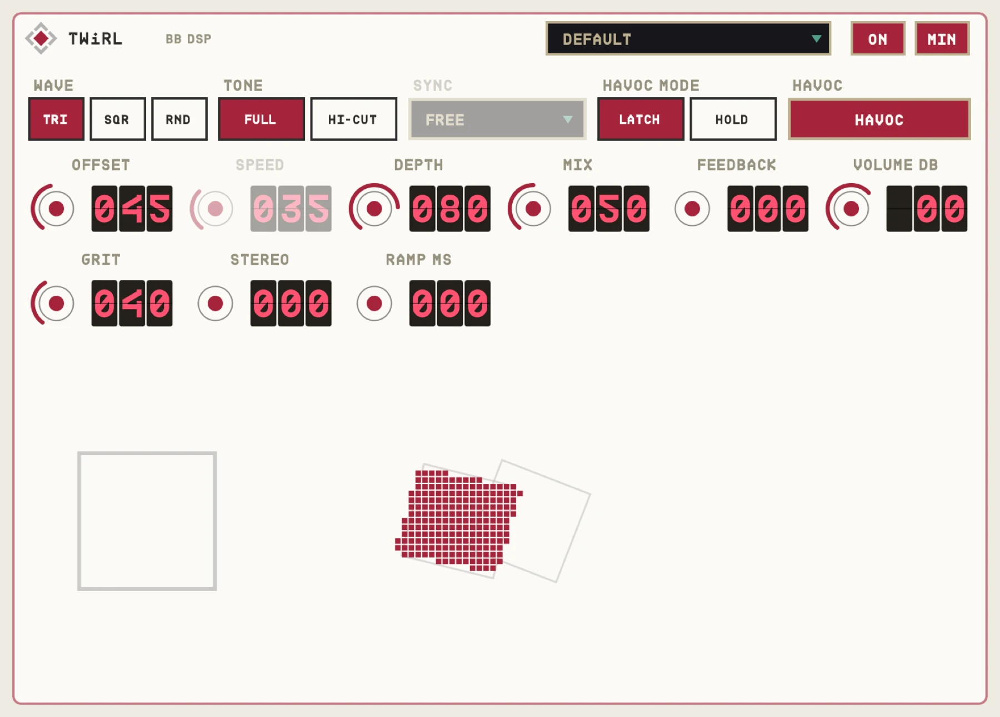

OVERVIEW
TWiRL is a tiny digital delay line that bends pitch as its clock speeds up and slows down. Short OFFSET gives chorus and vibrato, long OFFSET gives warped slapback. Stomp HAVOC and the speed leaps to 16 Hz like a rotary speaker spinning up, and coasts back down when you let go.
GRIT models the chip's character: companding, a sample clock that slows on long delays, fewer bits and a little hiss.


QUICK START
- 01Insert TWiRL on guitar or keys.
- 02MIX at 50% for chorus, 100% for vibrato.
- 03Set SPEED and DEPTH.
- 04Press HAVOC for the rotary rush.
HOW IT WORKS
Pitch from the clock
DEPTH moves the chip's clock up to an octave either way, so it bends like real tape or a bucket-brigade.
HAVOC RAMP
RAMP sets how long it takes to spin up; it coasts down 1.5 times slower, like a rotor.
Synced
SYNC locks the LFO to the host's beat and bar position.
CONTROLS
Values in the dark wells are the defaults.
MAIN
OFFSET0-100% (1.5-90 ms)
35
Delay time: chorus at the short end, slapback at the long end.
SPEED0-100% (0.05-10 Hz)
35
LFO rate.
DEPTH0-100%
50
How far pitch bends (up to an octave).
MIX0-100%
50
Dry against wet. 100% is pure vibrato.
WAVETRIANGLE / SQUARE / RANDOM
TRIANGLE
LFO shape. Square and random are slewed for bleep-bloops.
TONEFULL / HI-CUT
FULL
Full range or darker.
HAVOCON / OFF
OFF
Maximum speed. HAVOC MODE: LATCH or HOLD.
EXTRAS
RAMP0-999 ms
700
HAVOC spin-up time.
SYNCfree or note values
free
Tempo sync.
FEEDBACK0-100%
0
Repeats.
GRIT0-100%
40
Chip character.
STEREO0-100%
0
Left and right out of phase.
VOLUME-24 to +12 dB
0
Output level.
TIPS
- RANDOM wave at slow SPEED with MIX 100% is a warped-tape wobble.
- Long OFFSET, FEEDBACK 40% and GRIT high is a broken toy delay.
SPECS
- TYPE
- Audio effect (AU aufx), VST3, Standalone
- OUTPUT
- Stereo